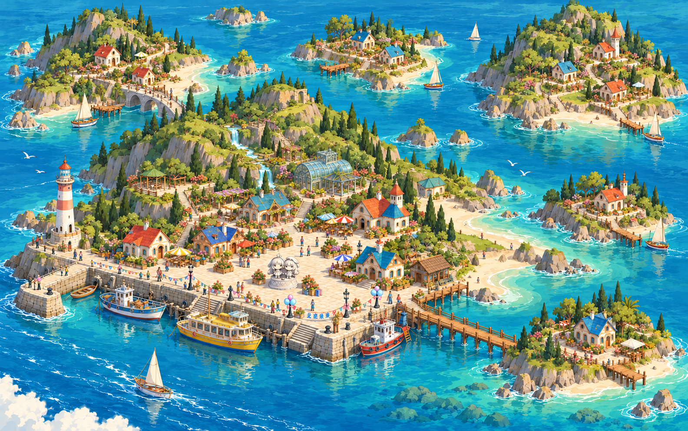

不吱岛 · 群岛地图画稿
新版静态画稿：主岛增加连贯山体、瀑布山坡、沙湾与自然海岸线；左上、右上两座副岛加入山地和海湾沙滩。地图与建筑参考手绘幻想海岛画风，保留温室、灯塔、多种船型、庆典广场、小型无彩绘石雕和畅通出海口，东南木桥连续连接两岸。尚未替换现有网页。

如果图片仍未显示，请点击上方「打开原图 / 放大查看」。
新版静态画稿：主岛增加连贯山体、瀑布山坡、沙湾与自然海岸线；左上、右上两座副岛加入山地和海湾沙滩。地图与建筑参考手绘幻想海岛画风，保留温室、灯塔、多种船型、庆典广场、小型无彩绘石雕和畅通出海口，东南木桥连续连接两岸。尚未替换现有网页。

如果图片仍未显示，请点击上方「打开原图 / 放大查看」。